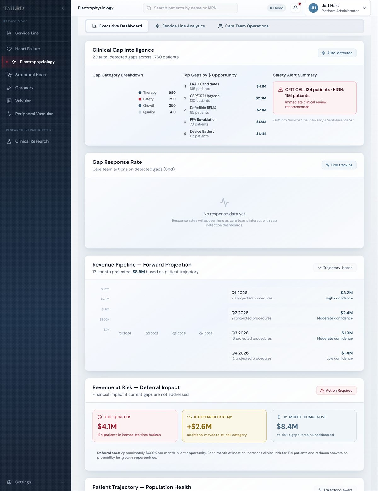
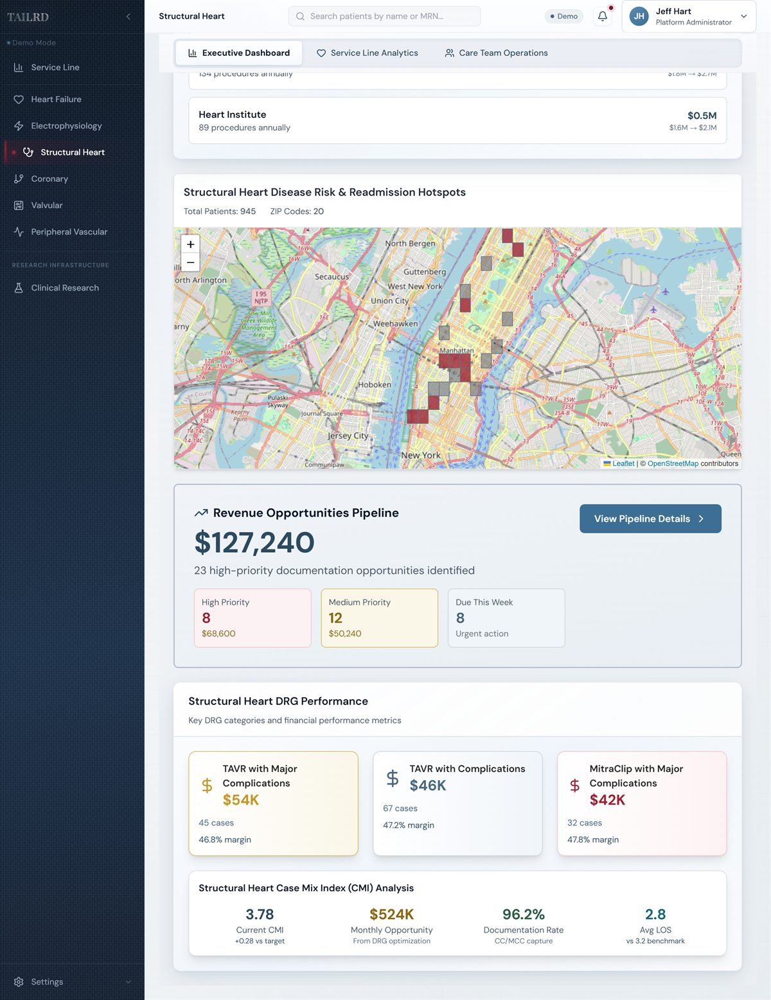
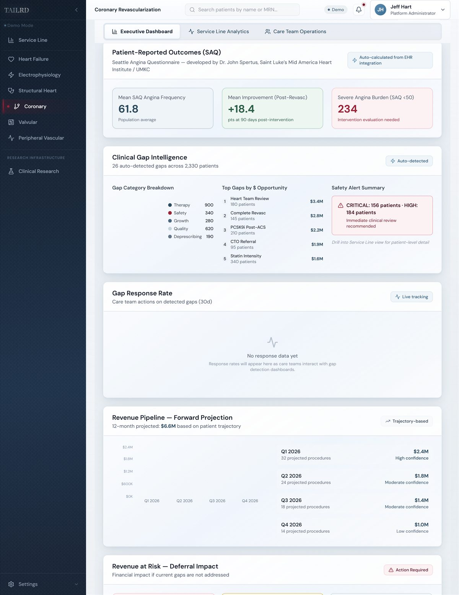
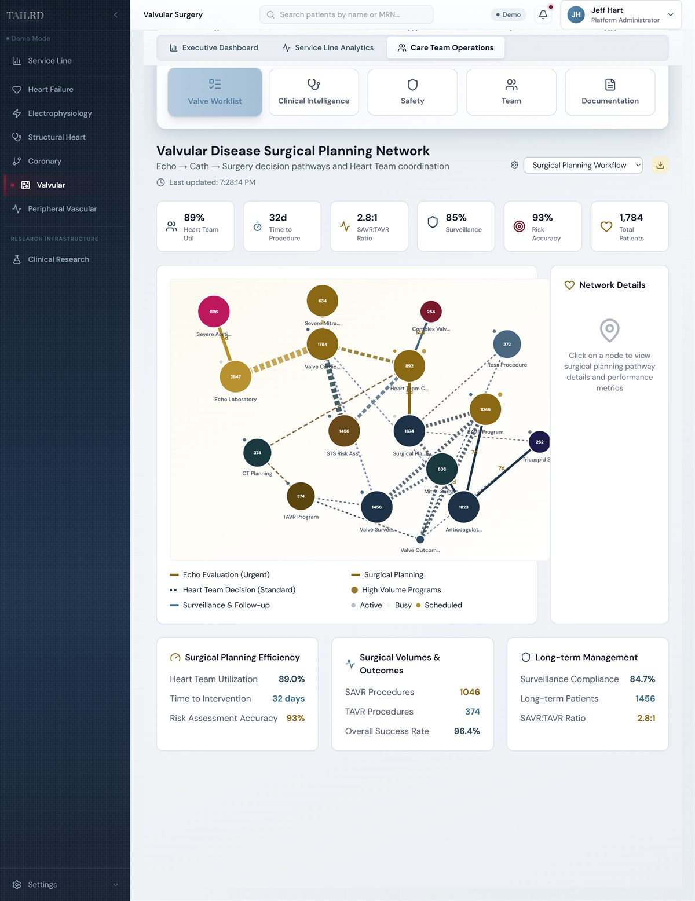
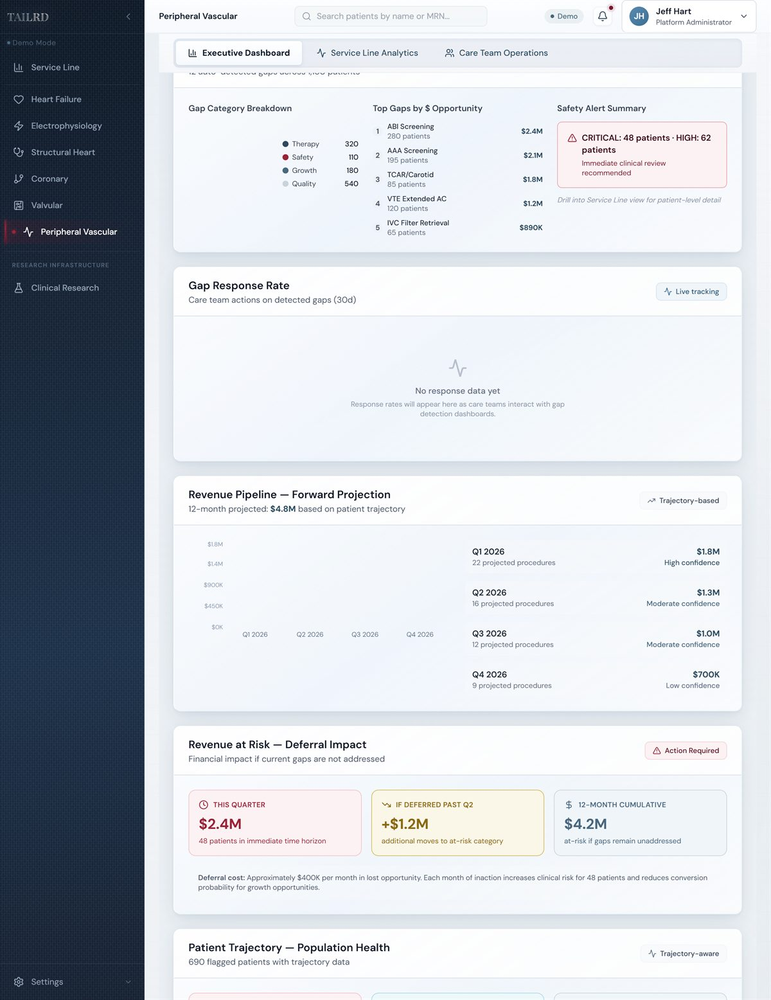
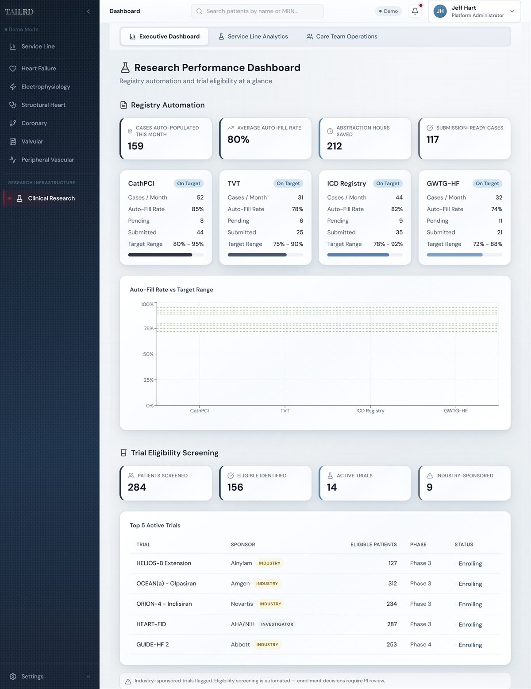
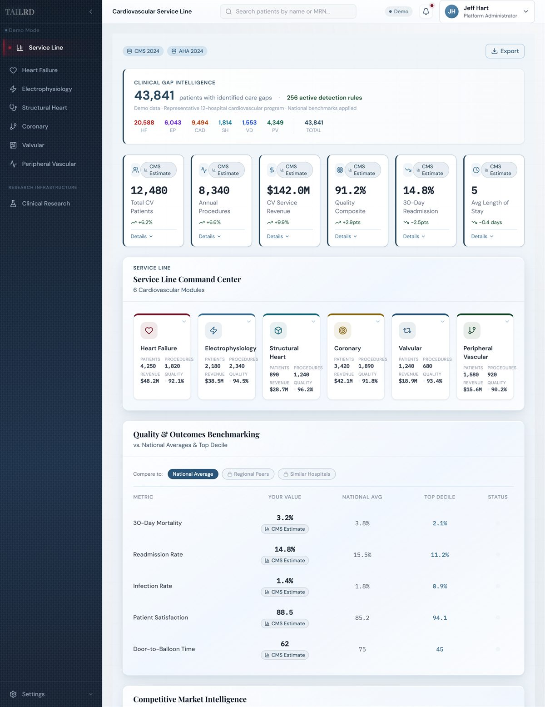
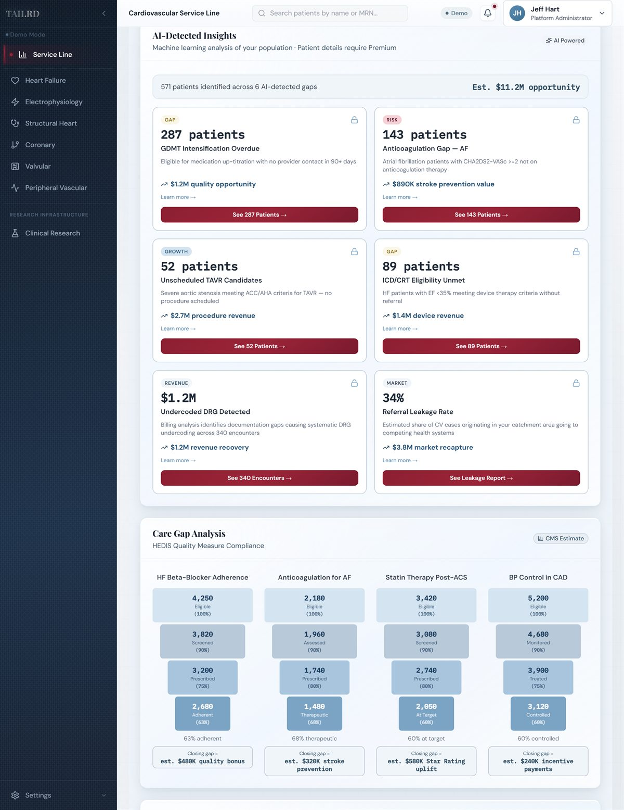
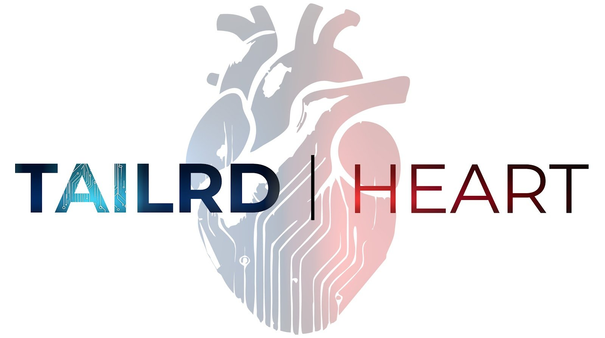

Find the cardiac patients falling through the cracks
TAILRD is an AI platform that scans your EHR data to identify cardiovascular patients with unmet clinical needs — across six disease areas simultaneously.
780+ gap detection algorithms. EHR-native via Redox. Deployed at leading health systems.
Heart Failure module — live gap detection.
Therapy gaps are measurable — and fixable
Despite proven guideline-directed therapies, cardiovascular patients remain dramatically undertreated. TAILRD translates these gaps into prioritized, system-level opportunities.
We identify your opportunity using CMS benchmark data — no PHI, no EHR connection required to get started.
What this means for your health system
Estimated impact for a 400-bed cardiovascular program — based on published society prevalence data and CMS reimbursement benchmarks.
Heart Failure
- 340 patients eligible for GDMT optimization
- 185 avoidable readmissions
Electrophysiology
- 210 undetected AFib patients
- 143 anticoagulation gaps
Structural Heart
- 85 unscheduled TAVR candidates
- 52 severe AS patients without referral
Coronary Revascularization
- 180 patients needing Heart Team review
- 156 critical safety patients
Valvular Surgery
- 1,240 patients needing surveillance
- 680 untracked post-procedure patients
Peripheral Vascular
- 280 ABI screening gaps
- 48 critical limb ischemia patients
Based on published prevalence data from ACC, AHA, CHAMP-HF, OxVALVE, and PARTNERS registries and CMS reimbursement benchmarks. Actual results vary by patient population and program maturity.
From zero data to actionable gaps in weeks
Free Program Analytics
We analyze your cardiovascular program using CMS benchmark data. No PHI. No EHR connection. Your estimated gap opportunity identified in ~2 weeks.
See Your Opportunity
Receive a prioritized report of clinical and financial gaps across your patient population — specific to your program size, payer mix, and service lines.
Connect Your EHR
Native Redox integration brings real patient-level data into TAILRD. No PHI leaves your environment. Live in days, not months.
Your Teams Take Action
Prioritized worklists delivered to physicians, service line leaders, and registries. Every gap tracked to closure.
Why health systems choose TAILRD
Most cardiac AI tools solve a narrow problem. TAILRD was built to see the entire system.
Full-Continuum Intelligence
Unlike point solutions, TAILRD analyzes the entire cardiovascular journey — from early risk identification to advanced intervention — continuously, not episodically.
Therapy-Gap Detection
TAILRD doesn't just identify disease. It flags patients who should already be receiving care — but aren't.
Clinically Grounded AI
Every insight is anchored in guidelines, real-world data, and validated clinical pathways — not black-box predictions.
Operationally Actionable
Insights route to the right stakeholder — clinicians, service line leaders, and executives — in formats designed for action, not dashboards.
Gaps span the entire care journey
TAILRD continuously scans every stage of the cardiovascular continuum — not just the moment of intervention. Therapy gaps emerge long before patients reach specialty care. TAILRD identifies them early, and keeps tracking them until care is delivered.
Six Clinical Modules. One Integrated Platform.
Hover or tap a card to see the module in action.
Heart Failure
Surfaces untreated and undertreated HF patients before decompensation occurs.
Electrophysiology
Identifies rhythm patients who meet criteria for anticoagulation, monitoring, or intervention.

Structural Heart
Flags echo findings, referral gaps, and delayed interventions across structural disease.

Coronary Revascularization
Detects missed opportunities in CAD risk stratification, diagnosis, and escalation of care.

Valvular Surgery
Surfaces progressive valve disease earlier — when intervention can still change outcomes.

Peripheral Vascular
Expands PAD detection, closes therapy gaps, and identifies limb-preservation candidates.

Clinical Research Assist
Automates registry abstraction and trial eligibility screening from live clinical data.

Intelligence at Every Level

Executive
Command center across all 6 modules — clinical gap intelligence, quality benchmarking, financial performance, competitive market intelligence.
Example: Undiagnosed HFpEF, untreated AF, silent structural disease

Service Line
AI-detected insights, care gap analysis, revenue pipeline, and margin improvement opportunities by module.
Example: Patients eligible for GDMT, anticoagulation, or referral
Care Team
Patient-level gap worklists, safety alerts, recommended actions, one-click referral.
Example: Referral, imaging, procedure, or therapy initiation
Built for Health System Procurement
Data Architecture
All processing occurs within your network boundary via Redox. No PHI stored on TAILRD infrastructure. EHR-native deployment.
SOC 2 & HITRUST
Hosted on SOC 2 audited, HITRUST CSF certified infrastructure via Cloudticity. Company-level SOC 2 Type II certification in progress; documentation available under NDA.
Deployment Model
AWS-hosted via Cloudticity HITRUST-certified managed services. ECS Fargate, RDS Postgres, CloudFront. No on-premise installation required.
Integration
Redox-certified integration layer. Compatible with Epic, Cerner, Meditech, and all major EHR platforms. Live in days.
Recognition & Partners
TAILRD also supports med device and pharma partners seeking real-world cardiovascular intelligence — delivered through trusted health system workflows.
Recognition

2026 Accelerator Cohort · Top 4% of 1,835 applicants
Elementa Labs — health tech incubator, 13th company accepted
Health System Partners
Pilot Program
Technology Partners
Leadership
Jonathan Hart
20+ years cardiovascular industry · Faculty: ACC, TCT, AVAM · Named to Cardiovascular Business 40 Under 40.
Dr. Tony Das
System Medical Director of Cardiovascular Innovation, Baylor Scott & White. Interventional cardiologist, Harvard/MGH trained. VIVA founding member. 20,000+ procedures.
Božidar Benko
Employee #1 at VuMedi. Healthcare AI specialist. Expert in scalable EHR data infrastructure.

Start with a Free Program Analytics Report
We'll analyze your cardiovascular program using CMS benchmark data and identify your estimated gap opportunity — no PHI, no EHR connection required.